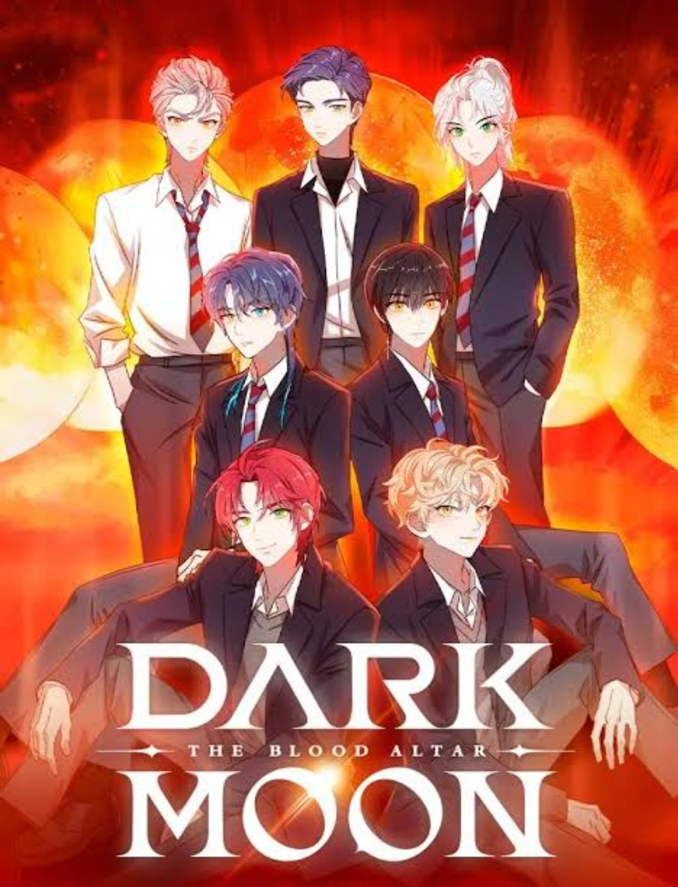
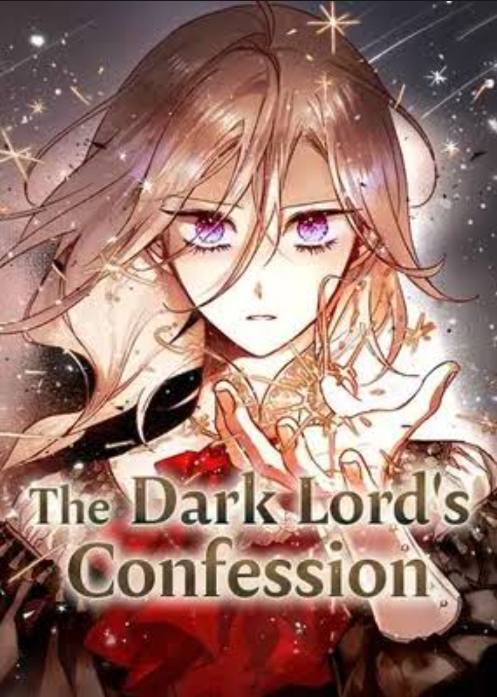
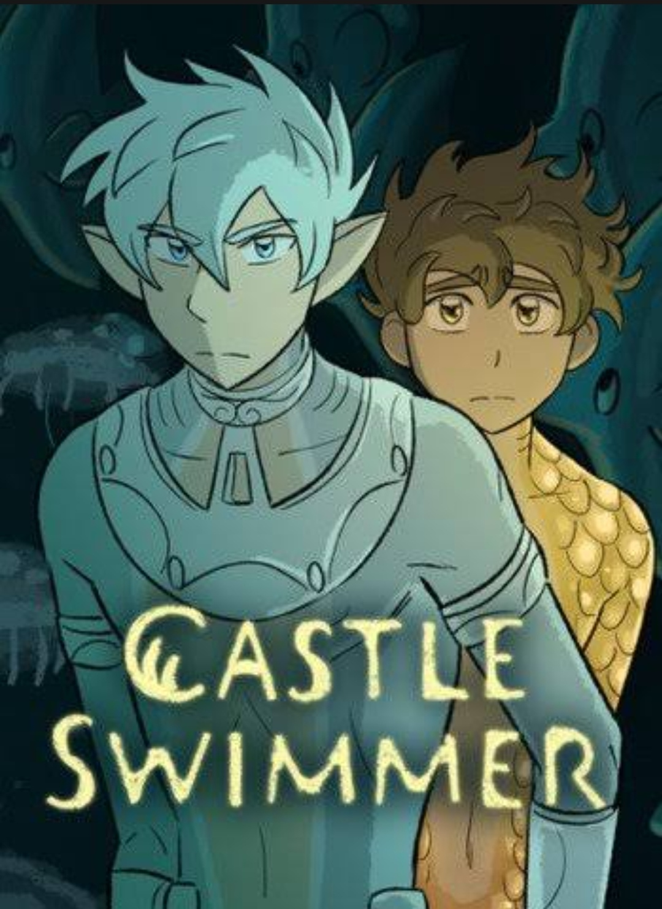
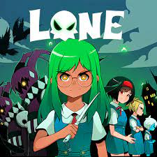

Dark Moon: The Blood Altar
HYBE
Welcome to Riverfield, where the most popular boys at two rival schools happen to be vampires and werewolves. When a mysterious new student, Sooha, transfers to Riverfield, the rivals find themselves inexplicably drawn to her.

1.9M

The Dark Lord's Confesssion
Topseoung
What happens if you end up summoning the Dark Lord, the whole continent's greatest enemy?
473,892

Castle Swimmer
Wendy Lian Martin
What happens when your entire life is ruled by a prophecy – your future foretold by people you’ve never met, who died long before you were born. Such is the story of two young sea creatures.
20.5M

Suitor Armor
Purpah
Lady-in-waiting, Lucia believes getting through the royal wedding will be the toughest part of her new life. That is until she finds herself falling head over heels with Modeus, an up-and-coming knight to the king's guard.
8.6M

Lone
Mel0h
Born without magic in a world full of witches, Lone is determined to claw her way to the top of wizarding school if it kills her -- and it just well might! After a deal with the devil improves her magical aptitude and leaves her with a parasitic demon lord stuck to her forehead, Lone's dream is finally within reach.
2M

LUMINE
Emma Krogell
A runaway werewolf, Lumine, meets a witch boy named Kody and is being hired to work as his bodyguard. Lumine, being determined to befriend Kody, tries everything to get Kody to trust him, while Kody tries to keep Lumine away from him. Their life gets even more complicated after an unfortunate event that leaves them to try to survive on their own.
20.9M